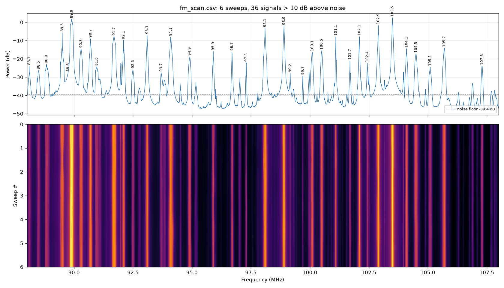
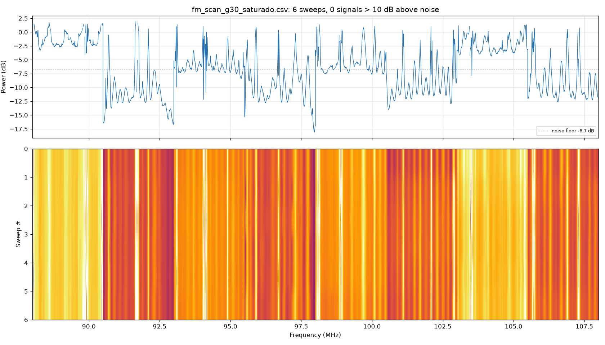

2. Wideband sweeps with rtl_power (example: FM 88–108 MHz)
The dongle only sees about 2.4 MHz at a time. rtl_power hops from one window to the next and
builds a wide spectrum. It is not real time, but it shows a whole band.
Step 1: close SDR# and SDR++
Only one program can use the dongle at a time.
Step 2: run the sweep
From the project folder (C:\...\rtl-sdr_v4l):
drivers/rtlsdrblog-V1.4.0/x64/rtl_power.exe -f 88M:108M:10k -g 0 -c 25% -i 10 -e 1m scans/fm_scan.csv
| Option | Meaning |
|---|---|
-f 88M:108M:10k |
From 88 to 108 MHz, with 10 kHz resolution |
-g 0 |
Tuner gain in dB. In Santiago, use 0 for the FM band (see below) |
-c 25% |
Discards the 25% edges of each hop, where the filter rolls off |
-i 10 |
One line (a full sweep) every 10 seconds |
-e 1m |
Stops after 1 minute (30s, 5m, 1h...) |
At the end it prints User cancel, exiting...: that is normal, it means the -e time ran out.
Step 3: plot
python tools/graficar_power.py scans/fm_scan.csv 10
It creates scans/fm_scan.png (average spectrum + waterfall) and lists the signals more than
10 dB above the noise floor (the second argument). Add --en to get a copy with English labels,
scans/fm_scan_en.png.
Result from 2026-10-02 (Santiago, 0 dB gain)

36 stations were detected. The strongest are 103.5, 89.9, 102.9, 98.9 and 98.1 MHz. 102.1 MHz, the station I was listening to in SDR#, shows up 32 dB above the noise.
Why gain 0 and not 30
The command was first run with -g 30 and without -c. The result is in
scans/fm_scan_g30_saturado.png:

- What you see: steps every 2.5 MHz, because each hop has a different floor, and detection finds no clear stations.
- Why it happens: the local FM stations are so strong that, at 30 dB, they overload the 8-bit ADC. That raises the noise across the whole hop.
- How to spot it: if raising the gain lifts the floor as much as the signals, or steps or ghost signals appear, lower the gain.
Other example bands
drivers/rtlsdrblog-V1.4.0/x64/rtl_power.exe -f 118M:137M:5k -g 30 -c 25% -i 10 -e 10m scans/aviacion.csv
drivers/rtlsdrblog-V1.4.0/x64/rtl_power.exe -f 144M:148M:2k -g 30 -c 25% -i 10 -e 10m scans/2m.csv
drivers/rtlsdrblog-V1.4.0/x64/rtl_power.exe -f 400M:470M:25k -g 30 -c 25% -i 30 -e 15m scans/uhf.csv
Outside the FM band you can use more gain (20–40 dB). If you see steps, lower it.
Intermittent signals (aviation, amateur radio) are easier to see in the waterfall with a long -e.